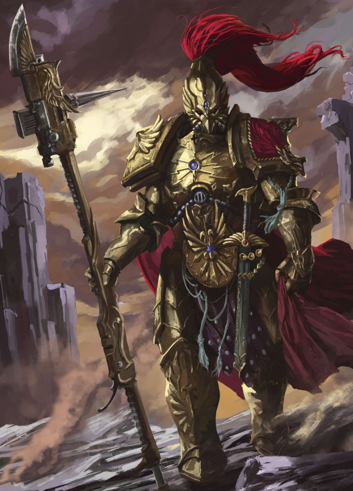

Dossier Custodien 000.M31
Les Adeptus Custodes ne sont pas des Space Marines. Ils ne sont pas une armée. Ils sont autre chose.
Chaque Custodien est une création unique. Conçu individuellement, modifié au-delà des standards génétiques connus, perfectionné jusqu’à atteindre un niveau que peu d’êtres peuvent approcher.

RÔLE SUR LE CHAMP DE BATAILLE
Leur rôle est simple en apparence. Protéger l’Empereur.
Mais cette mission dépasse largement la garde physique.
Ils surveillent Terra. Ils observent les institutions. Ils analysent les menaces.
Leur présence est constante. Leur intervention est rare.
DOGME ET DISCIPLINE
Contrairement aux Space Marines, ils ne sont pas déployés massivement. Chaque perte est inacceptable. Chaque engagement est calculé.
Leur équipement est parmi les plus avancés de l’Imperium. Armures auramite. Armes énergétiques. Technologies réservées à une élite inaccessible.
Leur formation ne se limite pas au combat. Ils étudient l’histoire, la stratégie, la philosophie, et la nature même des menaces qui pèsent sur l’Humanité.
Ils ne sont pas seulement des guerriers. Ils sont des gardiens du sens de l’Imperium.
HÉRITAGE DE GUERRE
Leur loyauté n’est pas dirigée vers les institutions. Elle est dirigée vers l’Empereur lui-même.
Cela les place en dehors de la hiérarchie classique.
Ils n’obéissent pas. Ils jugent.
Et si une décision impériale menace directement la sécurité de Terra, ils peuvent agir sans autorisation.
Sur le champ de bataille, un Custodien dépasse un Space Marine. Vitesse, précision, puissance.
Là où les Astartes sont des soldats d’élite, les Custodes sont des instruments parfaits.
Mais leur nombre est limité.
Ils ne peuvent pas sauver l’Imperium.
Ils peuvent seulement protéger ce qui en reste de plus important.
Il faut comprendre ceci.
Les Adeptus Custodes ne défendent pas l’Humanité.
Ils défendent l’Empereur.
Et si l’Humanité doit tomber pour garantir sa sécurité, ils n’hésiteront pas.
Fin de l’extrait. Accès aux protocoles Custodes restreint. Toute tentative d’approche non autorisée du Palais Impérial sera neutralisée.